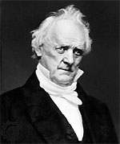

|

|

|
|
|
James Buchanan, who served as president of the United States
from 1856-1860, was born on April 23, 1791 in Stony Batter,
Pennsylvania. Although most well known for his four years
as president, Buchanan had a distinguished career in public
service long before he entered the White House. He served in
the U.S. Senate, as secretary of state, and as minister to
Great Britain. Indeed, public service was the sole focus of
Buchanan's life; although engaged once as a young man, he
never married.
A lawyer by occupation, Buchanan began his political
career with two terms in the Pennsylvania State Assembly,
beginning in 1814. From 1820 to 1830 he served as a
Congressman for Pennsylvania, first as a Federalist, and
then as a Democrat. Buchanan traveled overseas as the
appointed Minister to Russia, a duty he performed from 1832
to 1833. Upon his return to Pennsylvania, Buchanan was
elected U.S. Senator from 1834 to 1845. During Buchanan's
third term, he resigned his seat to accept the post of
secretary of state under President James K. Polk.
Increasingly, Buchanan aspired to the presidency but the
1852 nomination went to Franklin Pierce. President Pierce
appointed Buchanan as Minister to England, and for the next
four years, Buchanan represented American interests
overseas.
While in England, Buchanan became embroiled in
controversy over the 1854 Ostend Manifesto. Issued by
Buchanan, along with the U.S. ministers to France and Spain,
the manifesto argued that the United States should purchase
the island of Cuba from Spain. If Spain refused, they
recommended taking it by force. An unstated assumption of
the Ostend Manifesto was that Cuba would join the Union as a
slave state. While the Manifesto came to nothing, it created
a uproar. Spain naturally took offense, and began
preparations for war. Many anti-slavery northerners
mobilized against it and support for the fledging Republican
Party grew.
A good diplomat, Buchanan kept his job as minister. When
he returned to the United States, he found himself a hero
among Southern Democrats who applauded his pro-southern and
pro-slavery sympathies so evident in his support of the
Manifesto. Buchanan was also acceptable to Northern
Democrats, and secured his party's nomination easily in
1856. He ran on a platform that promoted the end of further
agitation over slavery and supported popular sovereignty in
the territories. Buchanan defeated Republican John C.
Frémont by a comfortable margin.
Buchanan took office in March of 1857, and within days he
was embroiled in sectional tensions. On March 6, 1857, the
Supreme Court announced its decision in the Dred Scott case.
Behind the scenes, Buchanan had exercised his influence to
see to it that the decision was favorable to the South. He
wanted desperately for the Supreme Court to settle the
slavery question. It did not, and the Court's ruling
nationalizing slavery outraged northerners.
Sectional tensions worsened further with Buchanan's
implementation of a pro-southern policy in Kansas. The
president felt that he had to mollify his southern base of
support and so he accepted the fraudulent elections that led
to a pro-slavery legislature in the Kansas territory.
Northern Democrats, led by Stephen Douglas, protested in
vain. Buchanan unwisely made support for the Kansas
Lecompton Constitution, which legalized slavery, a test of
party loyalty. This act destroyed the fragile unity of the
Democrats. The beleaguered 67 year-old president recommended
the admission of Kansas as a slave state, writing in his
message to Congress that Kansas "is at this moment as much a
slave state as Georgia and South Carolina."
The growing strength of the Republican Party owed much to
the ineptitude of Buchanan's presidency, and in 1860, their
candidate, Abraham Lincoln captured the White House. An
embittered Buchanan blamed the Republicans for the secession
of the seven southern states during the days and weeks
following Lincoln's election. Nevertheless, he deplored the
South's actions, stating that the Union was more than a
"mere voluntary association of states." Indeed, Buchanan
argued, the United States was a sovereign nation "not to be
annulled at the pleasure of any one of the contracting
parties." His strong defense of unionism was not followed by
action during the remainder of his tenure.
In March 1861, Buchanan left Washington and spent his
remaining years defending his administration, most
prominently in Mr. Buchanan's Administration on the Eve
of the Rebellion, first published in 1866.
Buchanan died on June 1, 1868, in Lancaster, Pennsylvania.
Source: Joan Waugh, ed., Facts on File Encyclopedia of American
History: Civil War and Reconstruction, 1856 to 1869 (New York: Facts on
File, 2003), 41-42.
|